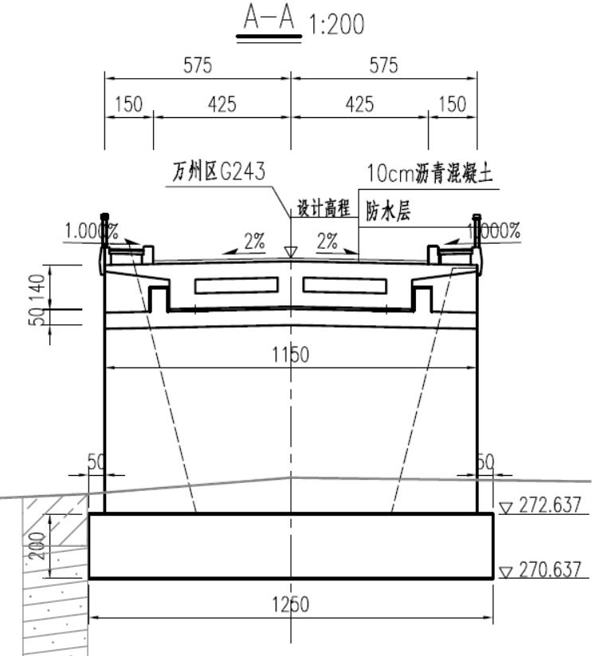
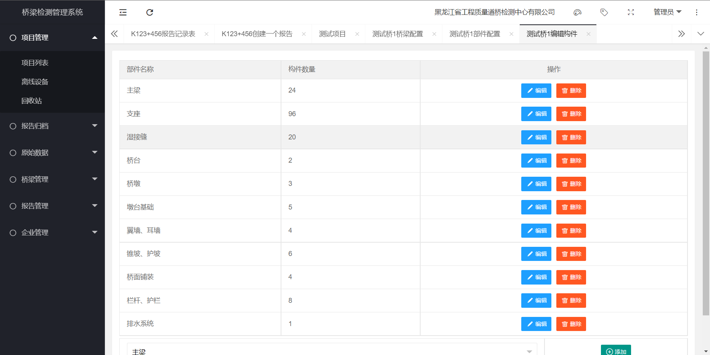

快速上手
快速上手
我们将通过一个简单案例介绍简立得的主要操作步骤，供您快速上手学习。
桥梁信息
现有已待检测桥梁具体信息如下：
备注
桥梁位置：G243开州(福耳桥)至梁平界段
桥梁中心桩号：K50+715
桥梁总长：30m
桥面标准宽度：1.5m(人行道)+8.5m(车行道)+1.5m(人行道) =11.5m
桥梁起点里程桩号为K50+700.0
终点里程桩号：K50+730.0
上部结构采用1-20m预应力混凝土现浇简支箱梁；0#、1#桥台设置CQF-C40型伸缩缝，并在两侧桥台后设置8m搭板。
本桥纵断面纵坡为3.7%的下坡段；桥台径向布置；支座设置盆式橡胶支座。
0#桥台，1#桥台均采用重力式桥台，基础采用扩大基础。
K50+715小河桥桥梁立面布置图和断面布置图如下:
图1 K50+715小河桥桥梁立面布置图
图2 K50+715小河桥桥梁断面布置图
建立项目
了解桥梁信息后，接下来您可以建立一个项目包括所有待检测的桥梁，这可以让您更方便、高效的管理各个桥梁。 这对于长大线路上包括多座桥梁的大型项目尤为重要。
如果您要检测的桥梁是独立的，您也可以通过左侧树形菜单“桥梁管理->添加一座桥梁”完成单座桥梁的添加，并开始后续的检测工作。
在项目管理视图内，您可以通过“项目配置”选项对项目内的一些通用信息进行设置，包括检测规范、检测主要仪器和设备、岗位人员签名表、检测人员分工表、报告首页设置等内容， 并可以在后续报告生成过程中快速引用。查看 桥梁信息 。
图3 项目管理视图
建立桥梁
简立得®提供快速构件设置模块，您可以根据待检测桥梁上部结构、下部结构、桥面附属结构形式，快速生成、编辑桥梁构件。
图4 构件快速生成视图
图5 构件编辑视图
桥梁建立完成后，通常需要根据规范要求，完善桥梁基本信息卡及其他信息等基本配置。查看 桥梁信息 。
图6 桥梁配置视图
检测桥梁
桥梁建立并生成相应构件后，可以在项目报告视图内建立该桥梁的检测报告，并对该报告的基本信息、检测信息、报告编号等大纲内容进行配置。
图7 桥梁检测配置视图
完成上述工作，意味着您对待检测桥梁有了总体的认识并对下阶段桥梁检测工作有了初步的计划。 接下来外业工程师可以携带便携式平板电脑，到桥梁现场开始桥梁检测工作。为了让不同工作任务的工程师更专注于自身的工作，可以通过桥梁检测配置视图进入“检测平台”。
图8 桥梁检测平台-外业工程师界面
在“检测平台”中，外业工程师可以只专注输入构件的病害、采集病害照片并进行构件病害的基本评定，而内业工程师可以更专注于病害分析、技术状况评定及报告整理。 桥梁信息 。
图9 桥梁检测平台-内业工程师界面
编辑报告
数据采集工作完成后，内业工程师可以根据数据分析、编制检测报告。 可以从内业人员专用页面对报告进行编辑、自动化技术状况评定打分、章节批处理等操作，完成报告编写。也可以从报告预览界面进行编辑，做到实时显示。查看 桥梁信息 。
图10 桥梁检测平台-内业工程师界面
成果校审
测报告初版完成后可以线上提交到负责校审的工程师完成校审工作，并模拟Word界面的审订功能将校审意见以批注的形式反馈至内业工程师，方便工程师按校审意见修改直至终版报告。查看 桥梁信息 。
图11 校审批注界面
如需了解更多信息，您可以查看简立得详细功能文档或访问www.jianlide.com。